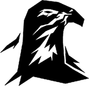
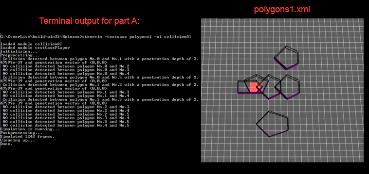
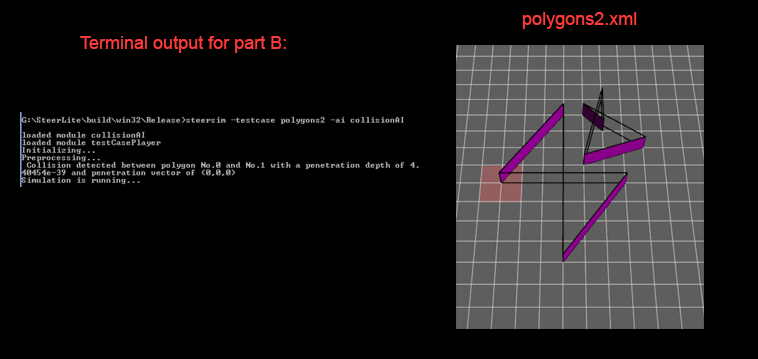
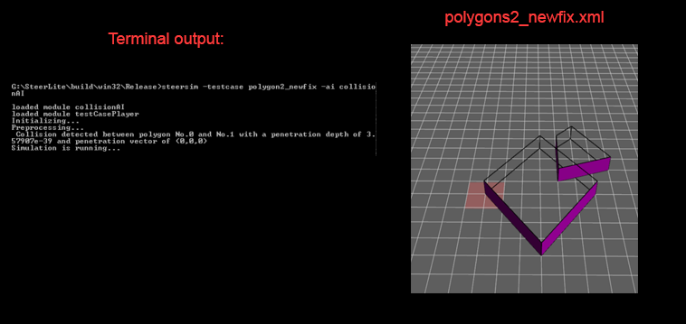

Computer Graphics
TEAM: The Falcons
Members: Neil, Ben, Jordan, Shahan
Web page for Rutgers Computer Graphics 2015 Group 3 Blog!
LINK TO PLAYABLE WEBGL GAMEHere is a little informational video/demo of the game.
10/10/15
- Created branch of repo.
- Looked up the tutorials inside assignment PDF.
- Became familiar with terms and group discussed navigation.
- Talked about games like "Starcraft" and "DOTA" and other games that involve mouse click movement similar to what is described in the PDF.
- Googled other things about Unity navigation and youtube videos about Unity and navigation.
- Small meetup.
- Group divided up work amongst selves.
- We talked about blog website and setup essentially the
- same as this PDF with pictures and video links.
- Will periodically update GitHub IO site: http://sia.github.io/CGB1/ for our blog.
A2 Assignment Screen Shots
10/26/15   The issue with polygons2 was the shapes were concave and they intersected upon themselves. A simple fix for this was to just make them convex and unfolded so GJK and EPA (unmodified) could be used on them.
A3 Assignment Blog
11/4/15The goal force is pretty straight forward. We were given the direction and dt. We just set the goal force to (direction * speed) – velocity / dt. The proximity force was harder. It included using a spatial database to locate all of the nearby neighbors. We determined if the neighbor was an agent and applied the proximity force based on the formula for agents. If it was a wall, we applied the force based on the formula for walls which is a very similar formula. We returned the force of all of these neighbors acting together. The agent repulsion force and wall repulsion force were both found the same way. Search through the neighbors in the spatial database. The agent function looked for agents and calculated a force based on position, radius, and body force. The wall function looked for walls and calculated a force based on the wall normal, points, and distance from the wall. Altogether our algorithm gave us slightly high steerbench scores. We noticed that our agents weren’t being repelled enough which resulted in many collisions but very quick finish times. Upon talking to Mahyar, we realized that by increasing the proximity force by a factor of 3 we could greatly reduce collisions with very small damage to our finish time. This allowed us to achieve steerbench scores that were very similar to the ones listed in the assignment 3 write up. Bottleneck Video Hallway One Way Video Hallway Two Way Video Hallway Four Way Video ( ͡° ͜ʖ ͡°)
sia.github.io